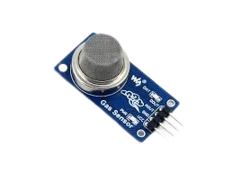

MQ-2 adalah sensor gas yang digunakan untuk mendeteksi keberadaan gas mudah terbakar dan asap di lingkungan sekitar. Sensor ini banyak digunakan pada sistem pendeteksi kebocoran gas dan sistem keamanan.
| Pin | Fungsi |
|---|---|
| VCC | Memberikan catu daya 5V |
| OUT/A0 | Keluaran Analog |
| GND | Ground |
| HC-SR04 | Arduino |
|---|---|
| VCC | 5V |
| GND | GND |
| OUT/AO | A0 |
Klik tombol berikut untuk mencoba simulasi HC-SR04.
Jalankan SimulasiSaat konsentrasi gas meningkat, nilai yang dibaca Arduino akan meningkat. Sensor MQ-2 dapat digunakan untuk mendeteksi asap, LPG, propana, dan gas mudah terbakar lainnya. Semakin tinggi konsentrasi gas, semakin besar nilai yang ditampilkan pada Serial Monitor.